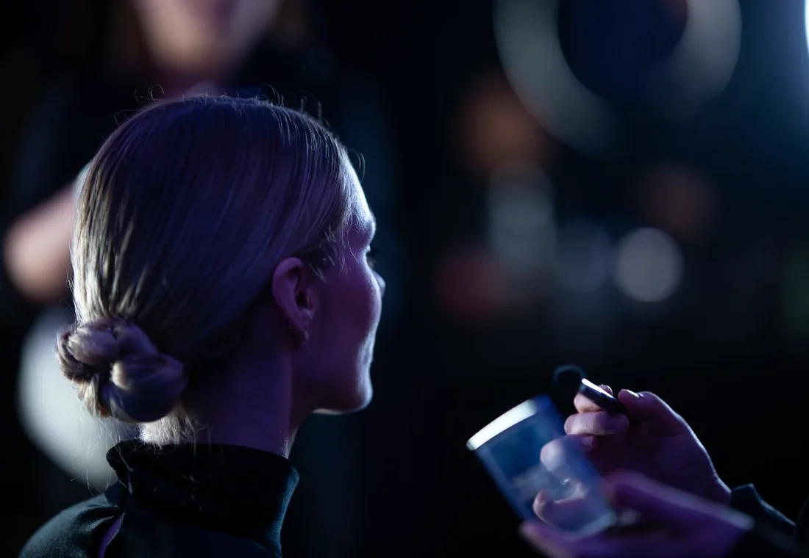
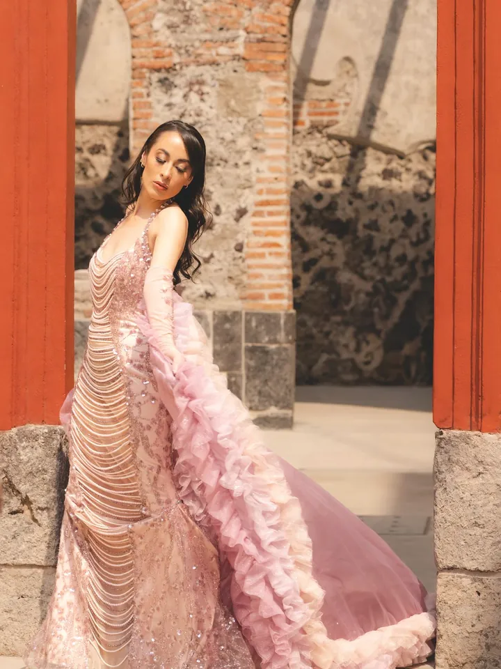
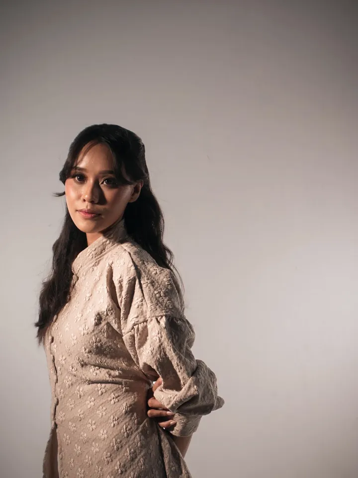
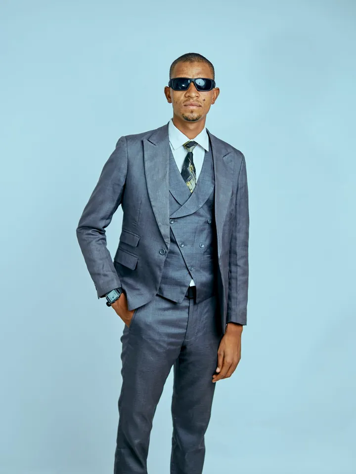
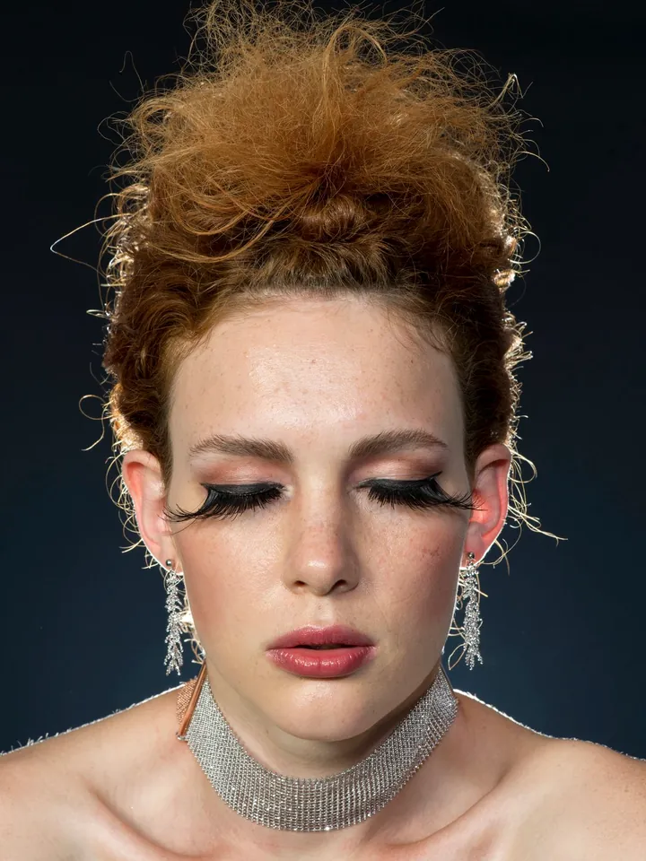
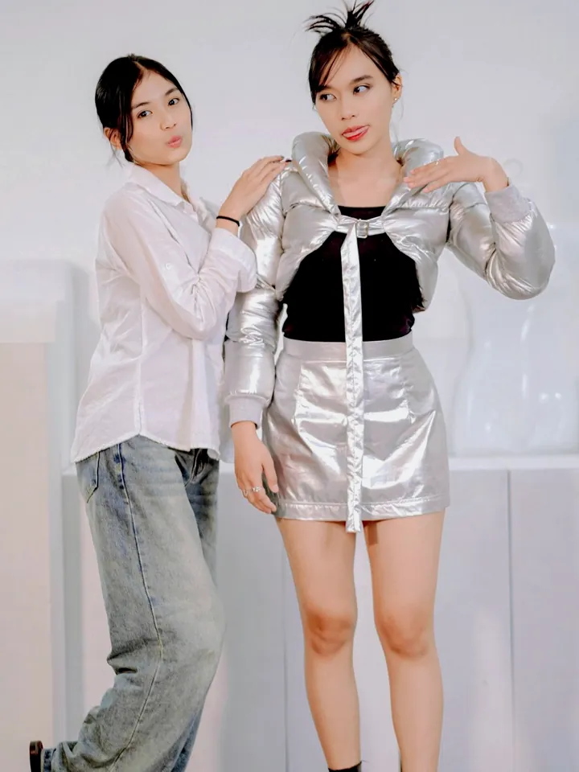
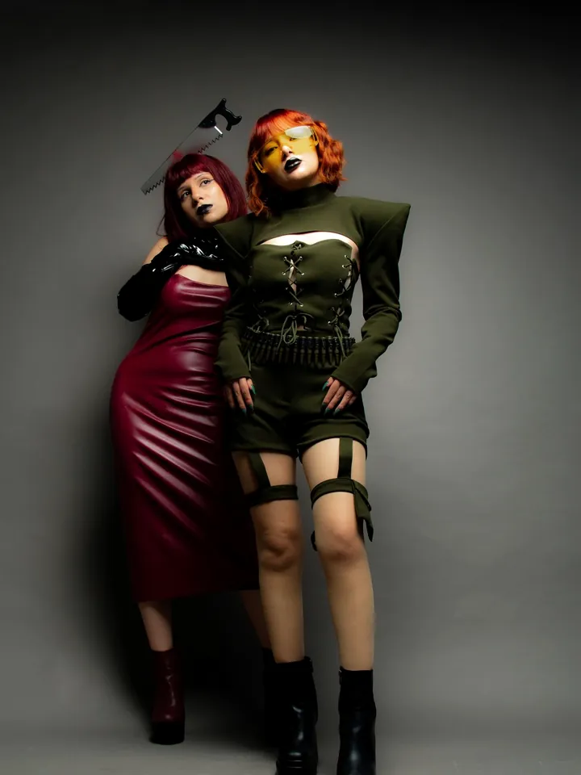
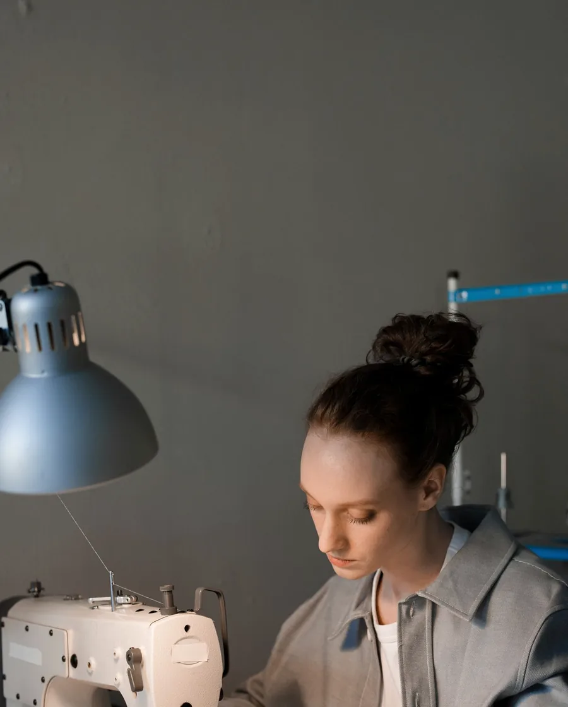
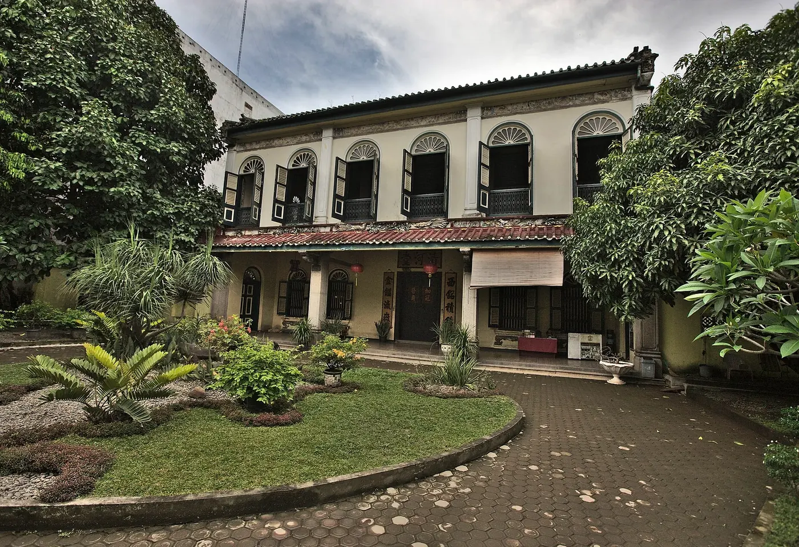
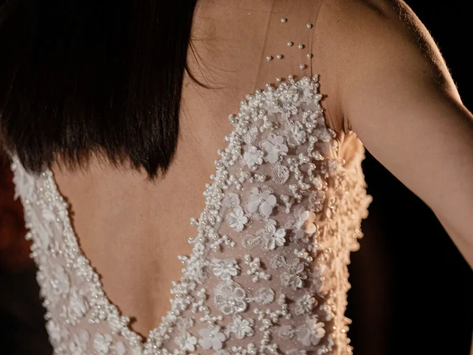

01 / Lab
11—15 May
Tenun
Lab
Ruang terbuka untuk melihat, menyentuh, dan memahami proses tenun. Workshop harian, arsip kain, dan sesi bersama penenun.
Ikut workshopVol. 01 — A new rhythm
Medan, Indonesia / 12—16 May 2027
Tenun masa depan Dari Medan untuk Indonesia
Lima hari merayakan keberanian berkarya di kota yang tumbuh dari pertemuan. Dari tenun Sumatera hingga suara baru Indonesia — Medan menjadi panggungnya.
The idea
Kota sebagai panggung
Medan adalah kota yang lahir dari pertemuan. Di sinilah budaya Melayu, Batak, Tionghoa, India, dan Nusantara saling bersinggungan — menciptakan warna, tekstur, dan cerita yang tidak ditemukan di tempat lain.
MFW 2027 mengangkat warisan itu ke masa kini. Bukan untuk membekukannya dalam museum, tetapi untuk dibawa ke runway, ke jalanan, dan ke percakapan hari esok.
Kenali ritme kami
Kami tidak sedang mendefinisikan mode Indonesia. Kami sedang membuka ruang untuknya.
Nabila Harahap — Creative Director
The lineup
8 dari 24 nama
Delapan nama yang kami undang untuk membuka bab pertama. Sebagian sudah lama diam-diam mengubah cara kota ini berpakaian. Sebagian lagi baru saja mulai.

01 Womenswear Lihat profil
02 Textile Lihat profil
03 Menswear Lihat profil
04 Womenswear Lihat profil 05 Contemporary Lihat profil 06 Contemporary Lihat profil
07 Womenswear Lihat profil
08 Contemporary Lihat profil08 desainer ditampilkan. 24 nama lengkap akan diumumkan bertahap.
Dapatkan kabar lineupThe schedule
All times WIB / GMT+7
Mulai dari pembukaan di halaman mansion sampai pesta penutup di bawah lampu. Temukan ritual harian MFW 2027 — dan simpan jadwalnya ke kalendermu.
Pintu dibuka. Kota datang untuk melihat apa yang sedang kami siapkan.
Opening dayPreview intim arsip tenun dan demonstrasi alat tenun bersama para perajin.
Kopi, rempah, dan percakapan pertama di halaman mansion.
Koleksi pembuka: tenun sebagai bahasa baru, dibuka oleh NARA.
Selebrasi pembuka bersama DJ dan tamu kota. Dress code: datang sebagai dirimu.
Hari untuk melihat lebih dekat: benang, jahitan, dan wajah-wajah baru.
Craft & beautyKoleksi kapsul tenun Deli, dikerjakan bersama tiga generasi penenun.
Beauty notes: wajah sebagai arsip, memori sebagai palet.
Tailoring pria, dibongkar dan dijahit ulang untuk malam yang panjang.
Musik, lampu, dan mode setelah gelap. Dibuka untuk publik terbatas.
Kota berubah menjadi runway. Potongan sehari-hari bertemu keberanian.
City energyPotongan sehari-hari yang aneh, tepat, dan sulit dilupakan.
Dua tubuh, satu manifesto jalanan. Kostum sebagai pernyataan.
Resortwear untuk udara Sumatera: ringan, terbuka, jujur.
Kota sebagai tekstur. Koleksi yang lahir dari trotoar dan cahaya sore.
Hari paling ramai: studio terbuka, diskusi, dan suara-suara yang tumbuh.
Open studioLihat proses, coba alat tenun, dan bawa pulang cerita.
Enam desainer muda mempresentasikan koleksi pertama mereka.
Diskusi terbuka: siapa yang berhak menceritakan kota?
Pertunjukan lintas disiplin: mode, tari, dan cahaya di halaman mansion.
Bab pertama ditutup, tetapi percakapannya baru saja dimulai.
The finalePasar kecil, zine, dan kopi untuk sore yang lambat.
Preview koleksi penutup dan behind-the-scenes bersama para desainer.
Gelaran penutup: 12 desainer, satu narasi tentang masa depan.
Sampai jumpa di bab berikutnya. Angkat gelas untuk kota.
Jadwal dapat berubah. Pintu dibuka 30 menit sebelum setiap sesi. Butuh akses pers?
Beyond the runway
Program kota
MFW bukan hanya soal pertunjukan. Ia tentang ruang untuk belajar, bertemu, dan melihat kota dengan cara yang berbeda.
Ruang terbuka untuk melihat, menyentuh, dan memahami proses tenun. Workshop harian, arsip kain, dan sesi bersama penenun.
Ikut workshop
Instalasi mode dan jendela kota di Kesawan, Merdeka Walk, dan Tjong A Fie Mansion.
Jelajahi ruteThe place
Kesawan, Medan

Rumah lama, gagasan baru
Sebuah rumah warisan di jantung Kesawan menjadi ruang pertemuan baru: tempat mode, sejarah, dan kota duduk di meja yang sama.
15 menit dari Bandara Kualanamu
5 menit dari Merdeka Walk
Parkir terbatas — gunakan ride-hailing
Foto venue: Pratyeka / Wikimedia Commons, CC BY-SA 3.0
The journal
Notes from the city
Catatan dari ruang rias, lorong, dan detik-detik terakhir sebelum runway dimulai.

Tentang jahitan tangan, waktu, dan kesabaran yang jarang masuk frame.
Potret anak muda Medan dan cara mereka menegosiasikan warisan di tubuh sendiri.